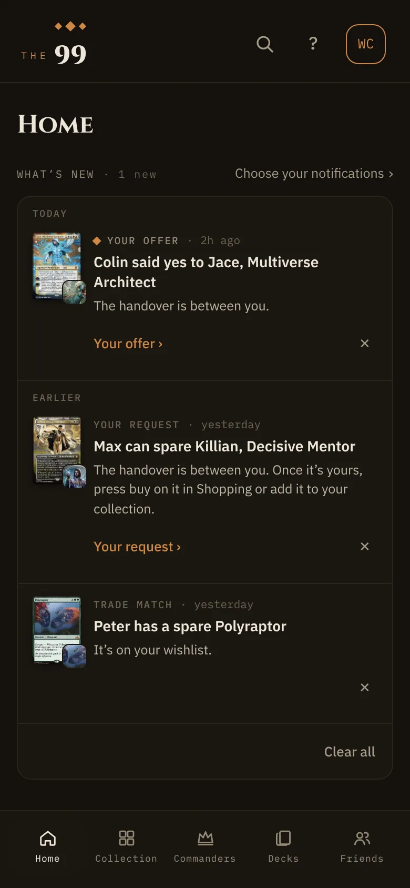
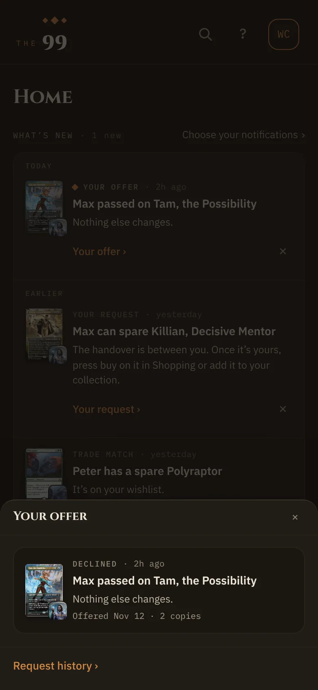
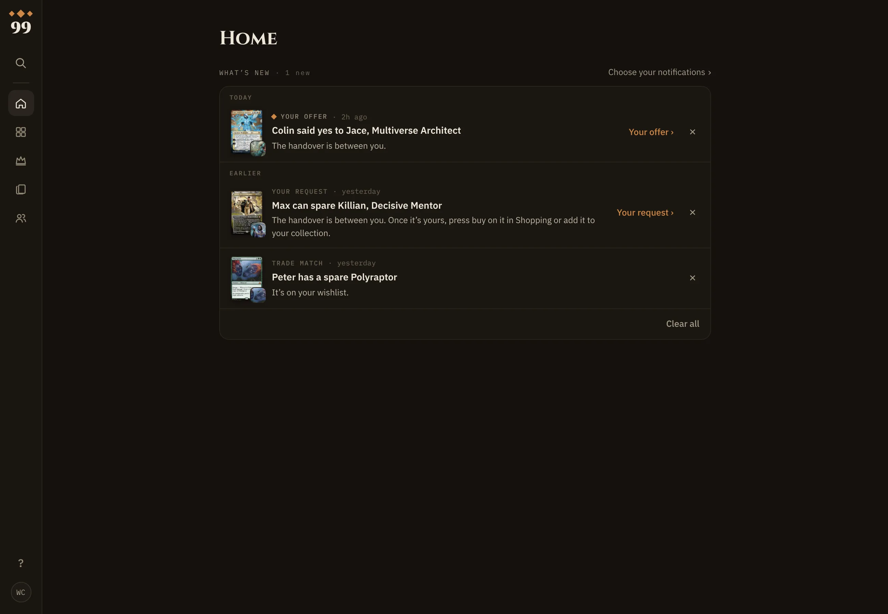
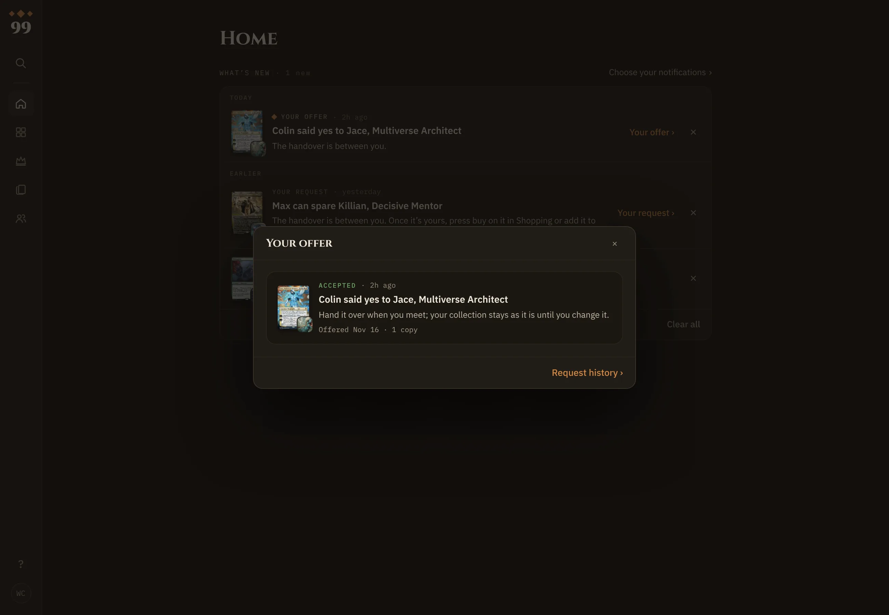
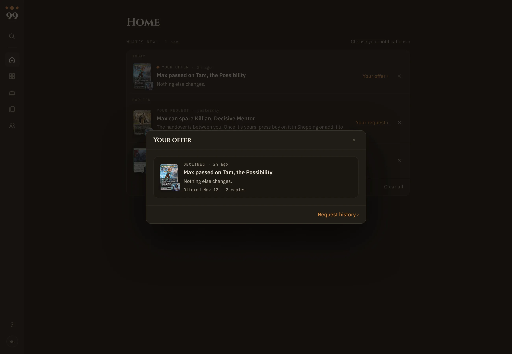

The offerer's answer sheet
From the offerer's What's new item. The ask's answer sheet shell with the request-history row; no Clear, nothing to answer. The foot goes to Request history.
Phone

S0 · Home item
Kicker Your offer (was Your request), press Your offer ›, ✕ hides the item.

S1 · Accepted
Colin said yes to Jace. Hand it over when you meet; your collection stays as it is until you change it. Offered Nov 16 · 1 copy.

S2 · Declined
Max passed on Tam. Nothing else changes. Offered Nov 12 · 2 copies.
Desktop

D0 · Home item
The press sits in the row's action column.

D1 · Accepted
560 wide, centred; the foot link on the right.

D2 · Declined
The kicker in the faint ink, as history's.
Other states
- Opening: the press reads busy (aria-busy) while the read is out, as the ask's.
- Refused (the friendship ended, the row gone) or failed: the press goes to /friends/requests.
- Closed: focus returns to the press. Esc and the sheet's ✕ close.